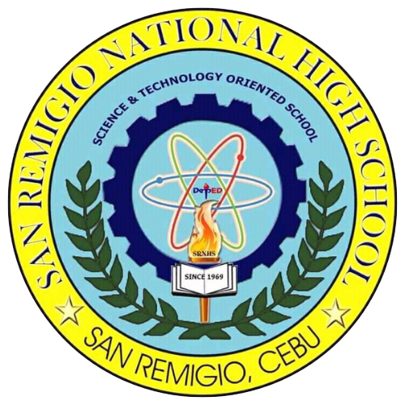

- Students learn in a child-friendly, gender-sensitive, safe, and motivating environment
- Teachers facilitate learning and constantly nurture every learner
- Administrators and staff, as stewards of the institution, ensure an enabling and supportive environment for effective learning to happen
- Family, community, and other stakeholders are actively engaged and share responsibility for developing life-long learners

SAN REMIGIO NATIONAL HIGH SCHOOL
SAN REMIGIO NATIONAL HIGH SCHOOL
REGION VII - CENTRAL VISAYAS
DISTRICT OF SAN REMIGIO 1
POBLACION, SAN REMIGIO, CEBU
ABOUT US
Mission
To protect and promote the right of every Filipino to quality, equitable, culture-based, and complete
basic
education where:
Vision
We dream of Filipinos
who passionately love their country
and whose values and competencies
enable them to realize their full potential
and contribute meaningfully to building the nation.
As a learner-centered public institution,
the Department of Education
continuously improves itself
to better serve its stakeholders.
who passionately love their country
and whose values and competencies
enable them to realize their full potential
and contribute meaningfully to building the nation.
As a learner-centered public institution,
the Department of Education
continuously improves itself
to better serve its stakeholders.